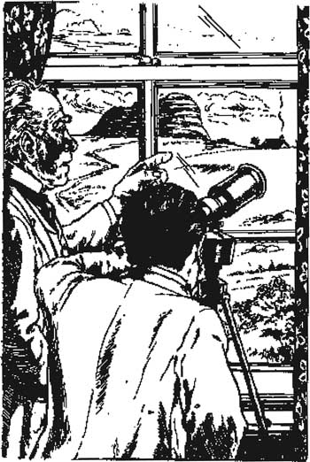

Listen to Part 1:
10

Người đàn ông trên đồng hoang
Người đàn ông mà tôi thấy trên High Tor là ai? Có phải là người mà Holmes và tôi đã thấy ở London? Nhưng tôi chắc rằng người đàn ông trên High Tor không có râu. Ngài Henry không thấy người đàn ông đó trên Tor và tôi không nói gì với ngài.
Chúng tôi không thể giúp gì cho Selden. Chúng tôi trở lại ngôi nhà. Selden đã chạy trốn khỏi điều gì? Ông đã nhìn thấy điều gì? Chúng tôi đã nghe thấy gì? Có phải là Quỷ dữ của dòng họ Baskerville? Tôi cảm thấy an toàn khi ở trong Lâu đài Baskerville hơn là ở ngoài đồng hoang vào ban đêm. Ngài Henry cũng cảm thấy như vậy.
Vào buổi sáng, chúng tôi đã báo cảnh sát. Họ đưa thi thể của Selden đi.
Ngài Henry kể cho gia đình Barrymore nghe về những gì đã xảy ra. Nhưng ngài không nói về những âm thanh kỳ lạ mà chúng tôi đã nghe thấy. Bà Barrymore khóc và che mặt bằng chiếc khăn tay. Ông Barrymore nói, ‘Mọi chuyện đã phải kết thúc. Người đáng thương Selden không thể sống trên đồng hoang trong mùa đông. Quá lạnh.’
‘Hãy quên những gì tôi đã nói đêm qua đi,’ Ngài Henry bảo họ. ‘Tôi muốn các người ở lại Lâu đài Baskerville.’
‘Cảm ơn ngài, thưa ngài. Chúng tôi sẽ ở lại,’ Barrymore nói.
Tôi về phòng và viết một báo cáo dài gửi cho Sherlock Holmes. Sau đó, tôi quyết định đi dạo, nhưng tôi không muốn đi bộ trên đồng hoang. Tôi không thích đồng hoang.
Thường thì tôi gửi thư cho Holmes ở Làng Grimpen. Nhưng hôm nay tôi quyết định đi bộ đến Coombe Tracey, ngôi làng ở phía nam. Tôi mất một giờ đi bộ dọc đường. Trên đường đi, tôi thấy Stapleton.
Listen to Part 2:
‘Tôi nghe nói ông đã bắt được tên sát nhân trốn thoát,’ Stapleton nói. ‘Tôi sẽ mong được nghe câu chuyện từ ngài Henry trong bữa tối ngày mai.’
‘Ngài Henry đang rất mong được dùng bữa tối với ông và chị gái của ông ngày mai,’ tôi trả lời.
‘Và chị gái tôi cũng vậy,’ Stapleton nói lạnh lùng. ‘Tôi mong được gặp ngài Henry vào ngày mai lúc tám giờ.’
‘Tôi sẽ nói với ngài ấy,’ tôi nói. ‘Chào ông.’
Tôi tiếp tục đi đến Coombe Tracey và gửi thư của mình. Tôi thấy một ngôi nhà lớn bên ngoài ngôi làng và hỏi ai sống ở đó.
‘Đó là nhà của ông Frankland,’ người bán hàng trong làng cho tôi biết.
Tiến sĩ Mortimer đã kể cho tôi về ông Frankland – và về sở thích của ông Frankland đối với các vì sao. Tôi quyết định đến thăm quý ông này và xin xem kính thiên văn của ông ta.
Ông Frankland đang đứng bên cổng vườn của mình. Ông là một người đàn ông cao tuổi, mặt đỏ với mái tóc bạc.
‘Chào ông,’ tôi nói, ‘tên tôi là Watson.’
‘Tiến sĩ Watson ư?’ ông Frankland hỏi.
Listen to Part 3:
‘Vâng,’ tôi trả lời.
‘Tôi nghe nói rằng ông đã bắt được Selden đêm qua trên cánh đồng hoang,’ ông Frankland nói. ‘Tôi cũng suýt bắt được hắn.’
‘Ông đã làm thế nào?’ tôi ngạc nhiên hỏi.
‘Bằng kính thiên văn của tôi. Hãy đến và xem.’
Ông Frankland đưa tôi vào nhà của mình. Tôi rất thích thú với kính thiên văn của ông. Nó rất lớn và mạnh mẽ.
‘Tôi đã nhìn thấy một người đàn ông trên đồng hoang nhiều lần,’ ông Frankland nói.
‘Tại sao ông không báo cảnh sát?’ tôi hỏi.
‘Tôi không chắc rằng đó có phải là tên sát nhân không,’ ông trả lời. ‘Tôi bắt đầu nghĩ rằng có lẽ có hai người đàn ông trên đồng hoang. Nhưng tại sao ai đó lại muốn sống ngoài đồng hoang? Không có thức ăn và thời tiết thì lạnh giá. Sau đó, hôm qua, tôi thấy một điều gì đó.’
‘Ông đã thấy gì?’ tôi hỏi.
‘Tôi thấy có người mang thức ăn ra đồng hoang,’ ông Frankland trả lời.
Listen to Part 4:
‘Vào ban đêm ư?’ tôi hỏi. Tôi nghĩ đến Barrymore và đèn hiệu của ông ta. Có lẽ ông Frankland đã thấy Barrymore mang thức ăn và quần áo ra cho Selden.
‘Không,’ ông Frankland nói. ‘Tôi thấy một cậu bé mang thức ăn vào ban ngày – và cả thư từ.’
‘Thư từ ư?’ tôi hỏi. ‘Ông chắc chắn không?’
‘Rất chắc chắn,’ ông Frankland nói, ‘bởi vì tôi biết cậu bé đó. Tôi đã hỏi người đưa thư và được biết rằng cậu bé đó thu thập thư từ mỗi ngày.’
‘Và cậu bé đó mang thư đến đâu?’ tôi hỏi.
‘Hãy nhìn qua kính thiên văn xem,’ ông Frankland nói. ‘Hãy nhìn vào trang trại cũ bên phải High Tor. Đó là Trang trại High Tor. Có người sống ở đó, nhưng tôi không biết là ai. Đó là một người lạ.’
Tôi nhìn qua kính thiên văn hướng về High Tor. Bên trái Tor, tôi thấy mái nhà của Ngôi nhà Merripit, nơi gia đình Stapleton sống. Bên phải, tôi thấy một trang trại cũ. Mái nhà bị hỏng và một bức tường cũng thế. Nhưng tôi thấy khói bốc lên từ ống khói.
‘Cảm ơn ông, ông Frankland,’ tôi nói. ‘Bất cứ ai sống ở đó cũng không phải là Selden. Selden đã chết.’
Tôi chào tạm biệt ông Frankland. Sau đó, tôi quyết định đi bộ qua đồng hoang và xem Trang trại High Tor cũ. Nó cách đó một hoặc hai dặm và tôi đến đó vào cuối giờ chiều. Mặt trời đang lặn và không khí lạnh giá.
Tôi chậm rãi đi đến trang trại. Cánh cửa bị hỏng và tôi nhìn vào bên trong. Trang trại trống rỗng và im lặng.
Listen to Part 5:

‘Có người sống ở đó, nhưng tôi không biết là ai. Đó là một người lạ.’
Một phần của trang trại khô ráo, nơi mà mái nhà không bị hỏng. Có một đống lửa gỗ trên sàn và một chiếc giường ở góc. Một chiếc đèn để trên bàn với một chồng giấy bên cạnh.
Tôi cẩn thận bước vào trang trại. Tôi nhét tay vào túi áo khoác nơi tôi cất khẩu súng lục quân dụng của mình. Tôi từ từ bước đến chiếc bàn và nhìn vào chồng giấy. Tôi thấy một trong những lá thư của chính mình. Có ai đó đã đánh cắp một trong những lá thư của tôi!
Ai sống trong trang trại này? Có phải là người đàn ông có bộ râu đen không? Có phải là người đàn ông mà tôi đã thấy trên Tor không?
Tôi nhanh chóng phát hiện ra, khi tôi nghe thấy tiếng bước chân bên ngoài. Tôi lấy khẩu súng lục ra khỏi túi và quay lại phía cửa. Một người đàn ông cao, gầy đứng ở cửa với lưng quay về phía mặt trời lặn. Tôi không thể nhìn thấy mặt ông ta.
‘Đêm nay thật đẹp, phải không Watson?’ người đàn ông nói.
Người đàn ông đó là Sherlock Holmes.
Mục lục
- Trang tiêu đề
- Mục lục
- Lưu ý về câu chuyện này
- Những người trong câu chuyện này
- 1 Ông Sherlock Holmes
- 2 Lời nguyền nhà Baskerville
- 3 Vấn đề
- 4 Ngài Henry Baskerville
- 5 Chiếc ủng bị đánh cắp
- 6 Lâu đài Baskerville
- 7 Gia đình Stapleton tại nhà Merripit
- 8 Báo cáo đầu tiên của Tiến sĩ Watson
- 9 Ánh sáng trên đầm lầy
- 10 Người đàn ông trên đầm lầy
- 11 Trang trại High Tor
- 12 Đặt bẫy
- 13 Con chó săn của nhà Baskerville
- 14 Trở về phố Baker
- Trọng tâm hiểu bài
- Danh sách các đầu sách ở Cấp độ Cơ bản
- Trang bản quyền